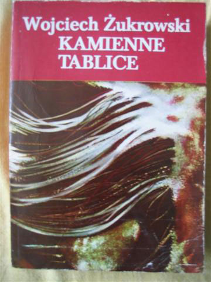
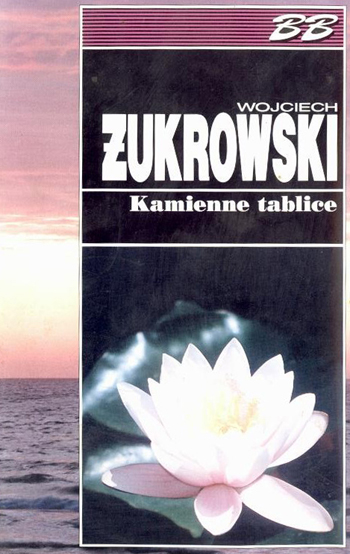

← Wszystkie książki
Okładka ze zbiorów archiwum · 1 Okładka ze zbiorów archiwum · 2 Okładka ze zbiorów archiwum · 3
BIBLIOTEKA WOJCIECHA ŻUKROWSKIEGO
Kamienne tablice
Delhi, rok 1956. Węgierski dyplomata Istvan Terey zakochuje się w australijskiej lekarce Margit. Uczucie zderza się z rodzinnymi zobowiązaniami i trudnymi wyborami, a codzienność bohaterów przenikają barwy i zapachy Indii.
- Autor
- Wojciech Żukrowski
- Rodzaj
- Powieść
- Rok w bibliografii
- 1966
O książce
Tytuł odwołuje się do tablic z Dziesięcioma Przykazaniami i moralnych wyborów bohaterów.
Wydania, przekłady i audiobooki
- 1970
Czeski przekład Heleny Teigovej — „Kamenné desky”, Odeon.
- 1992
Przekład rosyjski w czasopiśmie „Nieva” — rok według zestawienia Wikipedii.
- 1994
Muza — pełne wydanie bez ingerencji cenzury.
- 2012
Audiobook MTJ — czyta Roman Felczyński.
- 2015
Wznowienie Bellona–Albatros.
- 2016
„Stone Tablets”, przekład Stephanie Kraft, Paul Dry Books.
Bibliografia i źródła opisu
ŚLADY KOLEJNYCH WYDAŃ
Okładki z archiwum
Zachowane okładki mogą pochodzić z różnych wydań książki.



